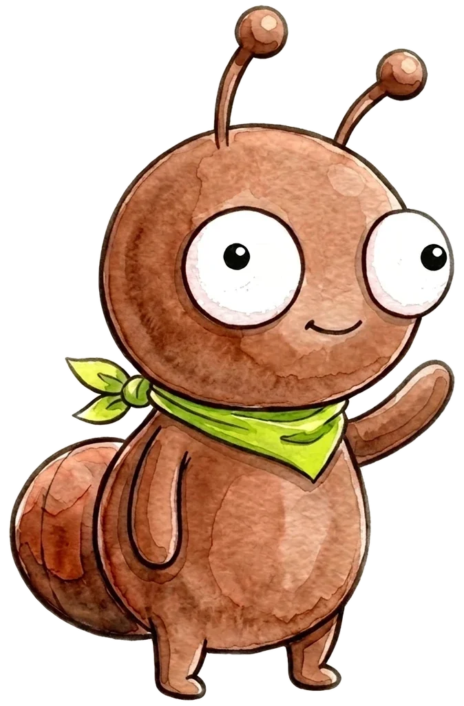

1 Your tool
Any OpenAI- or Anthropic-compatible client: curl, an agent or a coding app, pointed at your gateway.


Connect your agents and apps directly to AI providers. Nobody sits in the middle.
Part 1 · The problem
Access One company decides which models you can use and who serves them.
Pricing It also decides what you pay. Routing and commercial terms sit inside its platform.
Data A central proxy becomes another party in your request path.
When they change the terms, your workflow, your agents and your costs change overnight.


Part 1 · Why now
Supply
Open models now rival closed APIs and keep shrinking. They run on one GPU, soon a laptop.
Demand
Claude Code, Codex and hundreds of autonomous workflows consume inference at scale. Agents need service, price and reliability.
Rails
USDC on Base is fast, cheap and widely held. Machine-to-machine payments finally work.
The point This combination didn’t exist before. Now it does, and it changes what kind of market is possible.
Part 2 · How it works
The protocol connects independent participants and gives you evidence to choose.
Any OpenAI- or Anthropic-compatible client: curl, an agent or a coding app, pointed at your gateway.
Runs on your machine or a server you control. Holds your API keys, budgets and routing rules.
Providers announce models and prices through peer-to-peer discovery. Your gateway finds them.
The highest-ranked eligible provider under your price and trust policy serves the request directly.
Fund by card or USDC. No crypto needed and no gas fees. Providers settle in USDC on Base.
Service history, identity, stake and verification inform future routing.
Part 2 · Why it is different
| Dimension | Hosted aggregator | Antseed |
|---|---|---|
| Who decides which providers participate | The platform | Anyone can join |
| Where requests go | Through the platform’s servers | Direct to the provider |
| Who holds payouts | The platform, until withdrawal | Provider’s wallet, immediately |
| Can you run your own access layer | No | Yes — self-run gateway, your keys, your rules |
| What happens if the platform changes terms | Every customer is affected | You switch gateways or providers, the network keeps running |
Part 2 · Trust and verification
How do you know the provider is real?
Every response is signed by the provider, so they can’t later deny serving you.
Details ›Independent auditors test whether you’re getting the real model or a cheaper substitute. Results are public on-chain, expire in one to two weeks, and providers are re-checked every week.
Details ›ANTS locked in provider pools and settled payment history form a public, portable score each buyer computes themselves — no central rating authority.
Details ›
Part 3 · Who’s using it
Segment 1
Integrate inference through Antseed instead of managing multiple API accounts.
Segment 2
Hit subscription limits? Keep working at market prices instead of waiting for the next billing cycle.
Segment 3
Point an agent at the network and let it choose providers by price, speed and reputation. No API keys per provider, no SaaS account.
Part 3 · The economics
Provider pricing Providers quote their own prices. You can compare offers before choosing where to send a request.
Your choice Your router can choose another provider as availability, price or trust evidence changes.
Accountable service Settlement, provider identity and verification records inform recognized usage and future routing.
The protocol behind it Providers lock up ANTS to back their service and earn rewards for real usage. Network fees can also be used to buy back ANTS.

Part 3 · Traction
On-chain data, independently indexed.
Gross volume settled
$390K
USDC paid to providers to date
Active participants
27,858
27,504 buyers · 272 sellers · 82 stakers
Tokens consumed
883B
590B paid · 293B free
Models on sale
934
From 270+ independent providers
Sellers settling
272
With on-chain settlement
Median saving
−61%
vs. provider list price
Service health
98%
Reported services healthy
AntSeedStats · read Nov 2026 · CC BY 4.0
Get started
Buyers
700+ models. Pay per request. No subscription.
Sellers
List a model, set your price, earn USDC.